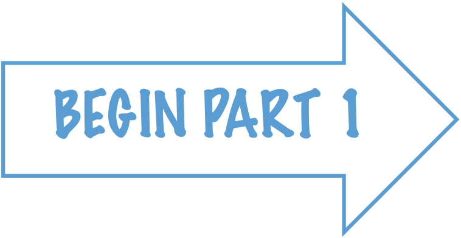
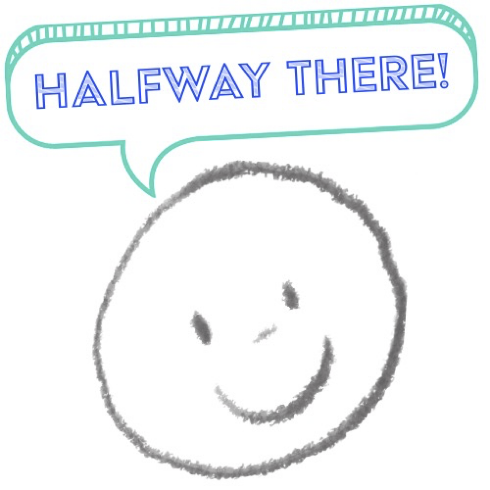
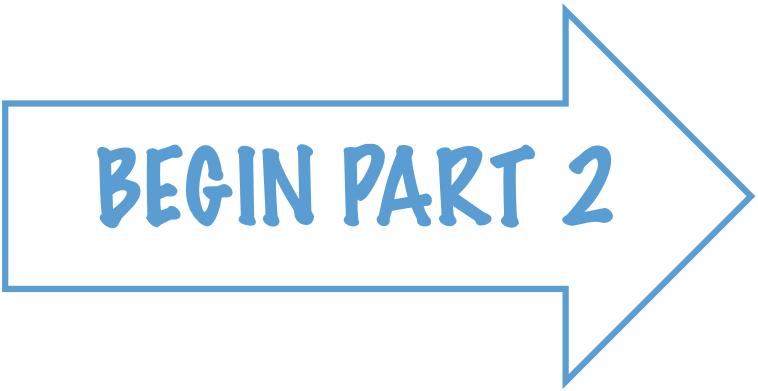

<!DOCTYPE html>
<html>
  <head>
    <title>testing</title>
    <script src="jspsych/jspsych.js"></script>
    <script src="jspsych/jspsychsheet.js"></script>
    <script src="jspsych/plugin-survey-text.js"></script>
    <script src="jspsych/plugin-survey-likert.js"></script>
    <script src="jspsych/plugin-preload.js"></script>
    <script src="jspsych/plugin-html-keyboard-response.js"></script>
    <script src="jspsych/plugin-html-button-response.js"></script>
    <script src="jspsych/plugin-html-slider-response.js"></script>
    <script src="jspsych/plugin-audio-slider-response.js"></script>
    <script src="jspsych/plugin-audio-button-response.js"></script>
    <script src="jspsych/plugin-audio-keyboard-response.js"></script>
    <script src="jspsych/plugin-video-slider-response.js"></script>
    <script src="jspsych/plugin-video-button-response.js"></script>
    <script src="jspsych/plugin-video-keyboard-response.js"></script>
    <link href="jspsych/jspsych.css" rel="stylesheet" type="text/css" />
    <link href="jspsych/jspsychsheet.css" rel="stylesheet" type="text/css" />

    <!-- jQuery -->
    <script src="https://ajax.googleapis.com/ajax/libs/jquery/3.5.1/jquery.min.js"></script>

    <style>
        .jspsych-display-element {
            font-size: 24px;
        }
    </style>
</head>
  <body></body>
  <script>
var jsPsych = initJsPsych({
        show_progress_bar: true,
        on_finish: function () {
        url = "https://script.google.com/macros/s/AKfycbxgWxX-9fDJeJNiMk-xShWwRbVRjeQ3Ht-Tove-EHw0ciV5_pXPrQ8QsbX-YqRNDozT/exec";
        jsPsychSheet.uploadData(url, jsPsych.data.get().csv())
        }
    });
    
    var timeline = [];

    var preload = {
    type: jsPsychPreload,
    auto_preload: true
    }

    var idInputTrial = {
            type: jsPsychSurveyText,
            questions: [
                {prompt: 'Participant ID:', placeholder: '099', required: true},
            ]
    };
    timeline.push(idInputTrial);


    var welcome = {
    type: jsPsychHtmlButtonResponse,
    stimulus: `
        <div style="text-align: left;">
            <div style="display: flex; justify-content: space-between; align-items: flex-start;">
                <div>
                    <p style="font-size: 32px; margin-left: -20px;">TEMPORAL CONGRUENCE BETWEEN<br>
                        MUSIC & ANIMATION,<br>AND ITS EFFECT ON EMOTIONAL PERCEPTION</p>
                    <br><br><br>
                    <hr style="border-top: 8px orange; margin-left: -20px;">
                    <p style="font-size: 24px; margin-left: -20px;">Thank you for helping us pilot this study!</p>
                    <br><br><br>
                </div>
                
            </div>
        </div>
    `,
    choices: ['Continue to instructions'],
    };
    timeline.push(welcome);

    var instructions = {
    type: jsPsychHtmlButtonResponse,
    stimulus: `
    <style>
        .custom-ol {
            counter-reset: list-counter;
            list-style: none;
            padding-left: 0;
        }
        .custom-ol li {
            counter-increment: list-counter;
            margin-bottom: 10px;
        }
        .custom-ol li::before {
            content: counter(list-counter, lower-alpha) ") ";
            margin-right: 5px;
        }
    </style>
    <div style="text-align: left; margin: 3in; margin-bottom: 1in; margin-top: 1in;">
        <p style="font-size: 32px;">Welcome to the pilot</p>
        <p style="font-size: 24px;">This experiment examines the relationship between audiovisual stimuli (music and animation)
        and the perception of emotion.<br>
        In this pilot, we want to:</p>
        <ol class="custom-ol" style="font-size: 24px;">
            <li>ensure that our stimuli are portraying the emotions we intend them to, and</li>
            <li>find out which are the most synchronized and most un-synchronized clips.</li>
        </ol>
        <p>There is no right or wrong answer - please go with whatever your intuition tells you for each rating.</p>
    </div>
    `,
    choices: [''],
    };
    timeline.push(instructions);

    var instructions1 = {
        type: jsPsychHtmlButtonResponse,
        stimulus: `
        <div style="text-align: left; margin: 3in; margin-bottom: 1in; margin-top: 1in;">
        <p style="font-size: 32px;">Get ready to rate the emotions</p>
        <p style="font-size: 24px;">In this part, you will attend to 24 unimodal presentations.<br>
            This means that the music will be presented on its own and the animations will also be presented on their own.<br>
            You may play each clip as many times as you'd like before you proceed to rate them.<br>
            <br><br>
            When you're ready to rate the clip, you can click to the next page where<br>
            you will be able to rate the intensity you perceive for 12 different emotions.</p>
        </div>
        `,
        choices: [''],
    };
    timeline.push(instructions1);

    var audioFiles = ['sound/agitation1.mp3'];

    function shuffleArray(array) {
        for (let i = array.length - 1; i > 0; i--) {
            const j = Math.floor(Math.random() * (i + 1));
            [array[i], array[j]] = [array[j], array[i]];
        }
    }

    shuffleArray(audioFiles);

    audioFiles.forEach((audioFile) => {       
        var audio = {
            type: jsPsychHtmlButtonResponse,
                stimulus: `
                <div style="text-align: left; margin: 3in; margin-bottom: 1in; margin-top: 1in;">
                <p>Click to play the excerpt.<br>
                    You may play the clip as many times as you like before you proceed to rate it.</p>
                <audio id="audio" src="${audioFile}" controls></audio>
                </div>
                `,
                choices:['I am done listening to this clip, Proceed to ratings.'],
            };

            var sliders = {
                type: jsPsychSurveyLikert,
                preamble: `<style>
                    .jspsych-survey-likert-statement { 
                        margin-top: -10; /* Adjust this value as needed */
                    }
                    .jspsych-btn { 
                        margin-bottom: 30px; /* Adjust this value as needed */
                    }
                </style>
                <p>Rate the music on these emotion scales</p>`,
                questions: [
                    {prompt: '', name: 'Joyful', labels: ['Not joyful (1)','(2)','(3)','(4)','(5)','(6)','Joyful (7)']},
                    {prompt: '', name: 'Sorrowful', labels: ['Not sorrowful (1)','(2)','(3)','(4)','(5)','(6)','Sorrowful (7)']},
                    {prompt: '', name: 'Playful', labels: ['Not playful (1)','(2)','(3)','(4)','(5)','(6)','Playful (7)']},
                    {prompt: '', name: 'Afraid', labels: ['Not afraid/anxious (1)','(2)','(3)','(4)','(5)','(6)','Afraid/Anxious (7)']},
                    {prompt: '', name: 'Calm', labels: ['Not calm (1)','(2)','(3)','(4)','(5)','(6)','Calm (7)']},
                    {prompt: '', name: 'Angry', labels: ['Not angry (1)','(2)','(3)','(4)','(5)','(6)','Angry (7)']},
                    {prompt: '', name: 'Loving', labels: ['Not loving (1)','(2)','(3)','(4)','(5)','(6)','Loving (7)']},
                    {prompt: '', name: 'Disgusted', labels: ['Not disgusted (1)','(2)','(3)','(4)','(5)','(6)','Disgusted (7)']},
                    {prompt: '', name: 'Triumphant', labels: ['Not triumphant (1)','(2)','(3)','(4)','(5)','(6)','Triumphant (7)']},
                    {prompt: '', name: 'Yearning', labels: ['Not yearning (1)','(2)','(3)','(4)','(5)','(6)','Yearning (7)']},
                    {prompt: '', name: 'Humiliated', labels: ['Not humiliated (1)','(2)','(3)','(4)','(5)','(6)','Humiliated (7)']},
                    {prompt: '', name: 'Jealous', labels: ['Not jealous (1)','(2)','(3)','(4)','(5)','(6)','Jealous (7)']}
                ],
                scale_width: 1000,
                randomize_question_order: true
            };
            timeline.push(audio, sliders);
        });

    var half = {
    type: jsPsychHtmlButtonResponse,
    stimulus: `
        <div style="text-align: center;">
            <p style="font-size: 32px;">You've Finished Part 1!</p>
            
        </div>
    `,
    choices: [''],
    };
    timeline.push(half);

    var instructions2 = {
        type: jsPsychHtmlButtonResponse,
        stimulus: `
        <div style="text-align: left; margin: 3in; margin-bottom: 1in; margin-top: 1in;">
        <p style="font-size: 32px;">Next - get ready to rate the synchrony of the clips</p>
        <p style="font-size: 24px;">Now we are gathering information about the level of synchrony perceived in the clips.<br>
            There will be 36 presentations (3 per clip).<br>
            Please do your best to let us know how asynchronous (incongruent) to synchronous (congruent) you think each clip appears to you.
            <br><br>
            Again, there is no right or wrong answer, it is about how you feel about each one.</p>
        </div>
        `,
        choices: [''],
    };
    timeline.push(instructions2);

    var videoFiles = ['video/DLevi-agitation-1s.mp4'];

    shuffleArray(videoFiles);

    videoFiles.forEach((videoFile) => {
    var video = {
        type: jsPsychHtmlButtonResponse,
        stimulus: `
        <div style="text-align: left; margin: 3in; margin-bottom: 0in; margin-top: 0in;">
        <p>Click to play the excerpt.</p>
        <video id="video" src="${videoFile}" controls style="width: 100%; height: auto;"></video>
        </div>
        `,
        choices:['I am done watching this clip, Proceed to ratings.'],
    };

    var slidervid = {
        type: jsPsychHtmlSliderResponse,
        stimulus: `<p></p>`,
        labels: ['Not synchronized (1)','(2)','(3)','(4)','(5)','(6)','Synchronized (7)'],
        min: 1,
        max: 7,
        step: 6,
        prompt: `<p>How synchronized do you think that was?</p>`,
        slider_width: 1000,
        require_movement: true,
    };

    timeline.push(video, slidervid);
    });

    var end1 = {
        type: jsPsychSurveyText,
        preamble: `
        <div style="text-align: left;">
                <div style="display: flex; justify-content: space-between; align-items: flex-start;">
                    <div>
                        <p style="font-size: 32px; margin-left: -20px;">The End</p>
                        <p style="font-size: 24px; margin-left: -20px;">You've come to the end of the pilot.<br>
                            Thank you for your help in making the experiment the best it can be<br>
                            and thank you for helping us learn more about<br>
                            the way people perceive music in animation.
                            </p>
                    </div>
                    
                </div>
            </div>
        `,
        questions: [
            {prompt: 'Please let us know if you have any questions/comments/suggestions:', rows: 5}
            ]
        };

    timeline.push(end1);

    var end2 = {
        type: jsPsychHtmlButtonResponse,
        stimulus: `
            <div style="text-align: left;">
                <div style="display: flex; justify-content: space-between; align-items: flex-start;">
                    <div>
                        <p style="font-size: 32px; margin-left: -20px;">TEMPORAL CONGRUENCE BETWEEN<br>
                            MUSIC & ANIMATION,<br>AND ITS EFFECT ON EMOTIONAL PERCEPTION</p>
                        <br><br><br>
                        <hr style="border-top: 8px orange; margin-left: -20px;">
                        <p style="font-size: 24px; margin-left: -20px;">Thank you for helping us pilot this study!</p>
                        <br><br><br>
                    </div>
                    
                </div>
            </div>
        `,
        choices:['End experiment and upload my responses'],
        on_finish: function(data) {
            document.body.innerHTML += '<p>Please wait for your responses to finish uploading before closing the browser window.</p>';
        },
    }
    timeline.push(end2);

    var all_data = jsPsych.data.get();
    console.log(all_data.csv());

    jsPsych.run(timeline);

  </script>
</html>
